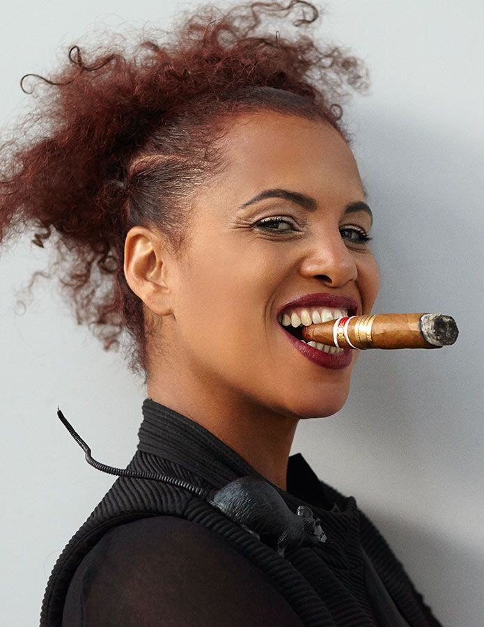
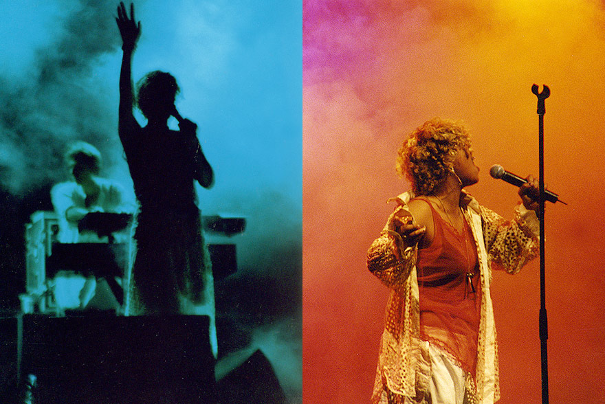

It’s somewhat different every time, but recently I had a place that I wanted to go in my spirit and soul, through the songs and with the songs. I knew it was going to need me to be in a more… not a static place, exactly, but a more still place. It was almost like I could feel the songs around my head. Of course, the collaborative journey played an important part in actually reaching the goal. In the case of Broken Politics, I think we reached the goal I had in mind. I work with Cameron McVey, who is my husband and my creative partner, beyond just the spousal stuff. We’ve also had a very intimate creative journey. Quite often we’re working with other programmers and musicians when we’re writing, so there are all of these different things to figure out and negotiate. He’s a really fast writer. I’m a much slower writer. A lot of the time we’re in the studio by ourselves, each working at our own pace. Sometimes, even when you have an idea of where you want to go, it’s still a struggle getting there and getting past all the little weird obstacle courses that your brain sets up for you in order to get to that place where you’re creatively open. That can be challenging. When I got to the end of making this record, I felt privileged, not only because I shared this amazing experience with Cameron and with Kieran Hebden, Four Tet, but because I felt like I didn’t cut corners. I’m quite a slow person, but if I’m being totally honest, I’m also a little bit lazy, actually. Just a little bit. Especially if I’m struggling with getting to the point. Often a song is kind of like a story, and it’s about getting inside the words and figuring out, “How am I going to tell this story? How am I going to say these things?” Sometimes I’ll take the easy way out and just kind of brush over some of the more difficult parts of getting the story told, and this time I didn’t do that. It was like we got let in from the waiting room into that great creative space. It felt like coming home, in some way.
It was something I thought about a lot. It really was about how you can start something from a very quiet place. I was thinking about what it’s like to be out in the middle of a forest, when things are so densely quiet that after a while that quietness almost feels like it’s roaring with loudness. We managed to keep it very gentle and organic, and then when it was time for it to get stronger, those elements didn’t have to be overpowering to actually feel forceful. That was my hope for it. The journey of creating things is an answer to being a human being in the world. It’s how we digest what’s happening around us. I feel like so much of what’s happening around me all the time is so loud and so wrong and so frightening, that embracing beauty and being allowed to be a bit quiet actually feels quite forceful. I didn’t want to counter the noise with more noise.

Totally. Maybe you don’t need to do that. There’s some people who do that and do it really well, but I feel like it doesn’t necessarily need to be about yelling. You can communicate so much through invoking a feeling. With a piece of art or music or writing, there can be so many subliminal messages that come through to you because of how it makes you feel. That shouldn’t be underestimated. I think about this in terms of jazz, which was often super political just because of the sound. When I think about the first album that Don, my step-dad, made with Ornette Coleman—that was a political statement. The album has the four of them on the cover and it’s just called This Is Our Music. When you put that record on, it felt political. It felt revolutionary. It was a statement. Obviously, at the time, some people found it incredibly objectionable, but there was no denying how powerful it was. We can carry that same political idea through different eras, punk and hip hop and so much other stuff, where the messaging is there—the music is telling the story of that time, like a diary—but not everything is literal. It doesn’t always have to be like, “Here we go, let’s wave the flag.” I think I’ve always felt compelled to try and express things that I’m absorbing, seeing, and feeling around me in the world, as a grain of sand, you know? Not as a spokesperson, just as a person, one human being. I’ve felt compelled to try and use this space to say things that are worth listening to, somehow. I’m not sure I have the answers, but maybe I have something to add to the conversation. I didn’t make a proper solo record for a 17-year period. Maybe that was the reason? I just think that thing of screaming and yelling, that kind of bombastic thing where you are head-butting against anything and everything, can be very boring. That kind of righteous political art can also be really self-obsessed. Also, if you’re a queer person or a person of color in this world, sometimes just making art that is authentically about your real life is in itself a political act. That’s its own kind of resistance. Exactly. Just being a human being is hard. You know, getting through life or getting through the day, sometimes, is hard. So finding a space where you can really be with your self-expression, that story is vital. Representation is vital. It’s so important that there is space for people of all colors and sexual preferences, that your creativity isn’t limited because of who you are as a human or who you choose to be. We should all be able to have our own space. And right now we don’t… and that’s still a problem.
Exactly. Just being a human being is hard. You know, getting through life or getting through the day, sometimes, is hard. So finding a space where you can really be with your self-expression, that story is vital. Representation is vital. It’s so important that there is space for people of all colors and sexual preferences, that your creativity isn’t limited because of who you are as a human or who you choose to be. We should all be able to have our own space. And right now we don’t… and that’s still a problem.
Being able to let go is so important. The thing that I get the most paranoid about when it comes to working with a new person is that I’m going to walk in and just be embarrassing, you know? That I’ll not be able to come up with anything. I think it comes from not really being a trained musician. I don’t know how to read scales, I’m not an amazing singer. A lot of it is just instinctual for me, so it’s really hard when I don’t feel right. The collaborative thing for me is just that click, you know? That thing that can happen when you’re in a room with people where they make you want to be the best that you can be—when someone is there with you and loving you through it. A good collaboration is just a weird science. When it works, it’s quite magical and suddenly you’re opening doors that you wouldn’t normally go into by yourself. But for me, it’s really about that feeling of openness. Feeling safe enough to be so open that if I do something or say something that sounds really shitty, it’s not going to trip me up or ruin my day. It is that feeling of trust in people, and love. Also feeling that they’re interested in you, just like you are interested in them. That you believe in each other.
I stepped back to making music as a solo artist only because I finally felt ready. I also agree with that idea of like, “Well, I don’t feel like making music, so I’m not going to do it.” Also, it wasn’t totally like I was done with making music because, like you said, I was doing things and collaborating on lots of stuff. I was also writing and recording a few projects that didn’t come out. I made a whole album with Tricky that didn’t come out, which was kind of a shame, because that was kind of a mean record. I was also having fun playing in bands with people. Eventually I definitely got to a spot where I was just like, “I’m ready. I’ve got some things to say and I’ve got some shit I need to let out. And if I don’t do it soon, I might hurt somebody.” I know that I can say things and let things out much better in a creative context than I could ever do in a conversation. I wouldn’t take it as far as to say it purifies my soul—I don’t know if that’s possible—but it definitely cleans out the system. Also, when I am on stage I feel a certain kind of force that maybe I just don’t experience in a lot of other places in my life. I used to go out dancing a lot when I was a bit younger, and that was also kind of like going to church, you know? It released something for me. When I was around 25 years old, back when I started on this so-called journey of being a solo artist, I always hoped and wished that I’d still be doing this when I was 60 or 70 or 80. I learned that maintaining a certain kind of mainstream success wasn’t right for me. That was a part of me needing to step away from that world for a while. I started to feel this terrible repetition that was a part of being in the business and it slightly paralyzed me. I felt like I started to overthink everything. The force and the energy and the spontaneity—the free thing that I really thrive on, the creative part of making new music, it just didn’t feel like there was room for it in that other place, in the realm of mainstream pop music. I feel like I’m back there now, but it took me a long time. That’s sort of the history of how I ended up here now.
No, it’s not an easy path. I feel incredibly privileged, because, you know, I am by no means a wealthy person, but I’ve certainly been able to get by ok. I have choice in my life and I’ve been able to live off of what I do pretty comfortably. And I really give thanks for that, and I’m very conscious of the songs that brought that privilege into my life. Some people are like, “Oh, don’t you get tired of songs like ‘Buffalo Stance?’” And it’s like, “Well, yeah, sometimes I don’t necessarily feel like playing it, but you know, those things have been amazing gifts in my life.” I also feel very privileged that I come from a place where I’ve grown up and worked and been around musicians who are truly compelled by what they do, and who are devoted to their art and to their music. I was also blessed to work with someone like Judy Blame, who was an amazing artist, art director, and stylist. We worked together for nearly 30 years. He just died earlier this year, but he was someone who lived for their art and their creativity. It’s not just about bankrolls and Gucci bags, you know? It’s like you’re doing it because you have to. It’s a real gift to have that notion. I’m not into nostalgia, but I think at the end of the day, that history is beautiful. I feel like with the journey that I’m on now, all of the threads have come together, and to me it’s all there. I feel a strong connection to where I come from, and how beautiful it is, and with the way my own parents viewed the world. I grew up with Don Cherry, my step-dad, and Moki, my mother, and their ideas of how they wanted to bring us up, the world they wanted to bring us up in, and the generosity of so many of those spirits, and the sound of the music… all of that has deeply informed my life.
I think the idea of nostalgia, that things were somehow better before, sucks. Every era, for better or for worse, has good things and bad things. I started living in NYC in the ’60s, but it was during the ‘70s when I started going out to clubs. I was a punk, and then I was around in the post-punk thing, and then I moved to London and got into hip hop and reggae. The openness of that time was quite special, and people were cross-collaborating, coming from different places, different ethnic backgrounds, and different social situations. Somehow it just worked, all of these people getting along together and inspiring each other and uniting through this desire to make stuff happen. I’m not nostalgic for those times, but I do get nostalgic for that kind of creative spirit. I think that’s much harder now, even though we have the internet and you can put music up there. It’s still hard. You can’t really go and squat in a house in London anymore. It’s not really an option. The realities of survival and crazy rents, it makes things harder. It’s not so easy to only work a little bit and then spend all your time making fanzines if you live in a city like London or New York. Still, there’s always—always—lots of great, important work being done. This idea that everything interesting stopped just because you got older is boring and sad. That kind of thinking will cause you to miss out on so much great stuff. Things change and change can be really hard… but it can also be really great.